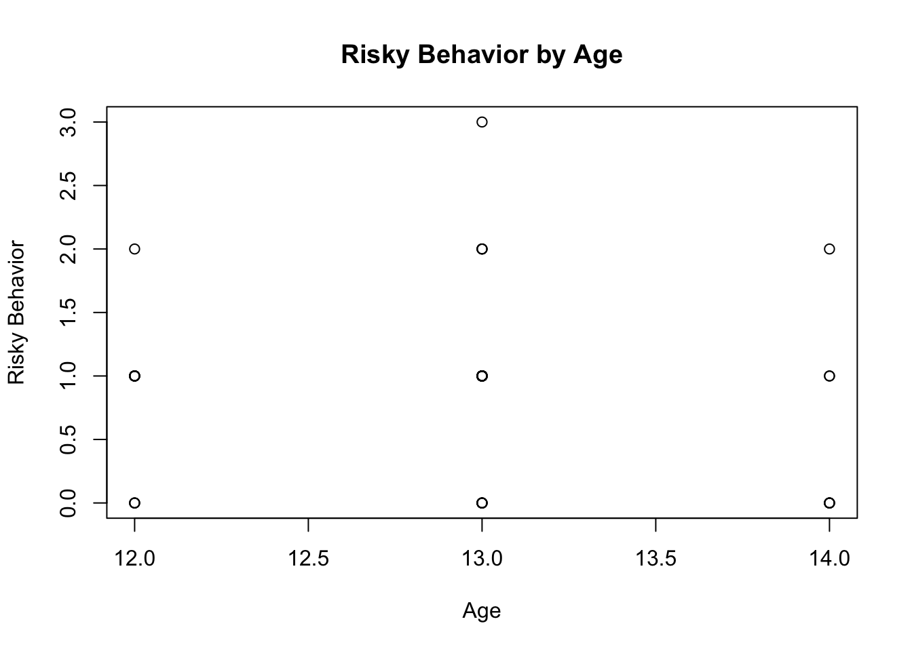
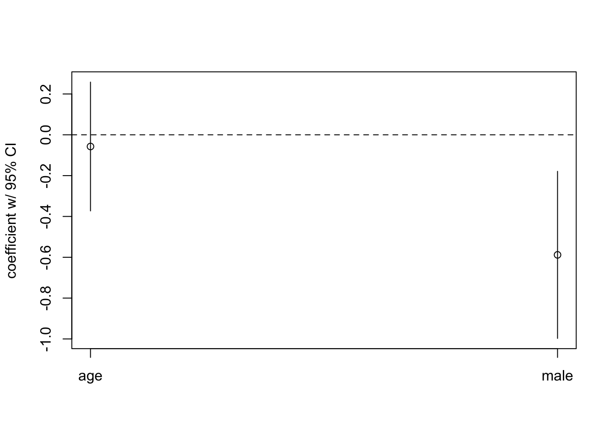
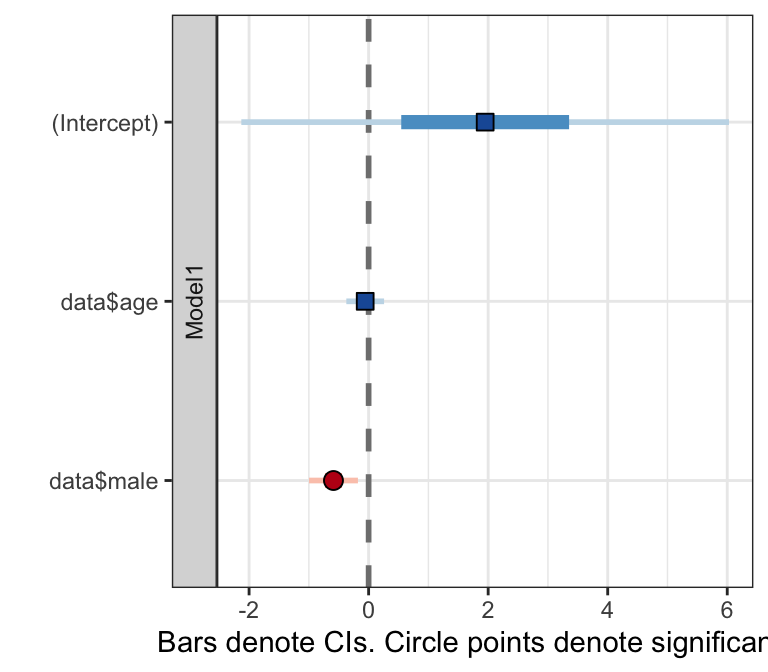

Here is an example of importing a data set, performing a regression analysis, and creating a plot of the coefficients.
Let’s work with the “r_workshop_data.csv” file. Recall that the file contains 52 individuals and 4 variables. The variables are: respondents id (“id”), a binary variable indicating whether the respondent is male or female (“male” where “1” is male), a measure of the respondent’s age (“age”), and a measure of risky behaviors engaged in by the respondent (“risky”).
Let’s go ahead and import it into R:
data <- read.csv(
"https://github.com/jacobtnyoung/RWorkshop/raw/master/r_workshop_data.csv", #the url.
header=TRUE, as.is=TRUE, na.strings="." #all the other arguments remain the same.
)
data[1:20,] #look at the first 20 cases of the data.Suppose we are interesting if whether there is a linear relationship between a respondent’s age and his/her risky behaviors. Let’s plot the relationship between the variables to visually inspect them:
plot(
data$age, # make age the x-axis.
data$risky, # make risky behavior the y-axis.
main = "Risky Behavior by Age", # set the title.
xlab = "Age", # label the x-axis.
ylab = "Risky Behavior" # label the y-axis.
)
Let’s examine the correlation between the variables using the cor() function:
## [1] NAWhy do we get an error?
We can examine the missingness for each variable by using the is.na() function:
## [1] FALSE TRUE FALSE FALSE FALSE FALSE FALSE FALSE FALSE FALSE FALSE FALSE
## [13] FALSE FALSE FALSE FALSE FALSE FALSE FALSE FALSE FALSE FALSE FALSE FALSE
## [25] FALSE FALSE FALSE TRUE FALSE FALSE FALSE FALSE FALSE FALSE FALSE FALSE
## [37] FALSE TRUE FALSE FALSE FALSE FALSE FALSE FALSE FALSE FALSE FALSE FALSE
## [49] FALSE FALSE TRUE FALSE## [1] FALSE FALSE FALSE TRUE FALSE TRUE FALSE FALSE FALSE FALSE TRUE FALSE
## [13] FALSE FALSE FALSE FALSE FALSE FALSE TRUE FALSE FALSE FALSE FALSE FALSE
## [25] FALSE FALSE FALSE FALSE FALSE FALSE TRUE FALSE FALSE FALSE FALSE FALSE
## [37] FALSE FALSE FALSE FALSE TRUE FALSE FALSE FALSE FALSE FALSE FALSE FALSE
## [49] FALSE FALSE FALSE FALSEWe can examine the missingness of a single variable by combining thre functions is.na(), which() and length():
## [1] 2 28 38 51## [1] 4We can examine the missingness of both variables jointly by combining two functions is.na() and table():
##
## FALSE TRUE
## FALSE 42 6
## TRUE 4 0Only take those cases that are complete by using the use= argument:
## [1] -0.0778548We can estimate a linear regression model using the lm() function:
##
## Call:
## lm(formula = data$risky ~ data$age)
##
## Residuals:
## Min 1Q Median 3Q Max
## -0.9568 -0.7892 0.1270 0.1270 2.1270
##
## Coefficients:
## Estimate Std. Error t value Pr(>|t|)
## (Intercept) 1.96216 2.19190 0.895 0.376
## data$age -0.08378 0.16964 -0.494 0.624
##
## Residual standard error: 0.7121 on 40 degrees of freedom
## (10 observations deleted due to missingness)
## Multiple R-squared: 0.006061, Adjusted R-squared: -0.01879
## F-statistic: 0.2439 on 1 and 40 DF, p-value: 0.6241Let’s make this model a bit more robust by adding male to the equation:
##
## Call:
## lm(formula = data$risky ~ data$age + data$male)
##
## Residuals:
## Min 1Q Median 3Q Max
## -1.2618 -0.5590 -0.2045 0.3837 1.7955
##
## Coefficients:
## Estimate Std. Error t value Pr(>|t|)
## (Intercept) 1.94985 2.08145 0.937 0.35495
## data$age -0.05734 0.16099 -0.356 0.72376
## data$male -0.58817 0.20878 -2.817 0.00773 **
## ---
## Signif. codes: 0 '***' 0.001 '**' 0.01 '*' 0.05 '.' 0.1 ' ' 1
##
## Residual standard error: 0.6587 on 37 degrees of freedom
## (12 observations deleted due to missingness)
## Multiple R-squared: 0.1809, Adjusted R-squared: 0.1366
## F-statistic: 4.085 on 2 and 37 DF, p-value: 0.02496Now we could create a plot of the estimate. Rather than manually entering the coefficients and standard errors, we can use the stored results. Since the estimates and standard errors are an object, we can just reference the particular values of the matrix we want in the plot. First, let’s look at the results:
##
## Call:
## lm(formula = data$risky ~ data$age + data$male)
##
## Residuals:
## Min 1Q Median 3Q Max
## -1.2618 -0.5590 -0.2045 0.3837 1.7955
##
## Coefficients:
## Estimate Std. Error t value Pr(>|t|)
## (Intercept) 1.94985 2.08145 0.937 0.35495
## data$age -0.05734 0.16099 -0.356 0.72376
## data$male -0.58817 0.20878 -2.817 0.00773 **
## ---
## Signif. codes: 0 '***' 0.001 '**' 0.01 '*' 0.05 '.' 0.1 ' ' 1
##
## Residual standard error: 0.6587 on 37 degrees of freedom
## (12 observations deleted due to missingness)
## Multiple R-squared: 0.1809, Adjusted R-squared: 0.1366
## F-statistic: 4.085 on 2 and 37 DF, p-value: 0.02496## [1] "summary.lm"## [1] "call" "terms" "residuals" "coefficients"
## [5] "aliased" "sigma" "df" "r.squared"
## [9] "adj.r.squared" "fstatistic" "cov.unscaled" "na.action"## Estimate Std. Error t value Pr(>|t|)
## (Intercept) 1.94985030 2.0814498 0.9367751 0.354948916
## data$age -0.05733533 0.1609925 -0.3561366 0.723761046
## data$male -0.58817365 0.2087760 -2.8172475 0.007726979## [1] TRUE point <- c(results$coefficients[2,1],results$coefficients[3,1])
se <- c(results$coefficients[2,2],results$coefficients[3,2])
upper.ci <- point+(1.96*se)
lower.ci <- point-(1.96*se)
#Now, we can plot:
n.coef = 2 # number of coefficients.
names = c("age","male") #coef names.
x.ax = seq(1,n.coef,length.out=n.coef) #dims of the x axis.
y.ax = seq(min(lower.ci),max(upper.ci),length.out=n.coef) #y axis.
plot(
x.ax,
y.ax,
type="n", # do not plot anything yet.
ylab="coefficient w/ 95% CI", # label for y axis.
xlab="", # label for x axis .
xaxt="n" # toggle x axis labels (for now).
)
points(x.ax,point) # plot the point estimates.
segments(x.ax,upper.ci,x.ax,lower.ci) #now the intervals.
abline(h=0,lty=2) # add a line at zero.
axis(side=1,at=x.ax,labels=names) # add coefficient labels.
We can do a better job with the texreg package:
For this package, we use the plotreg() function. It is fairly straightforward, in that we just pass our linear model into the plotting function.
